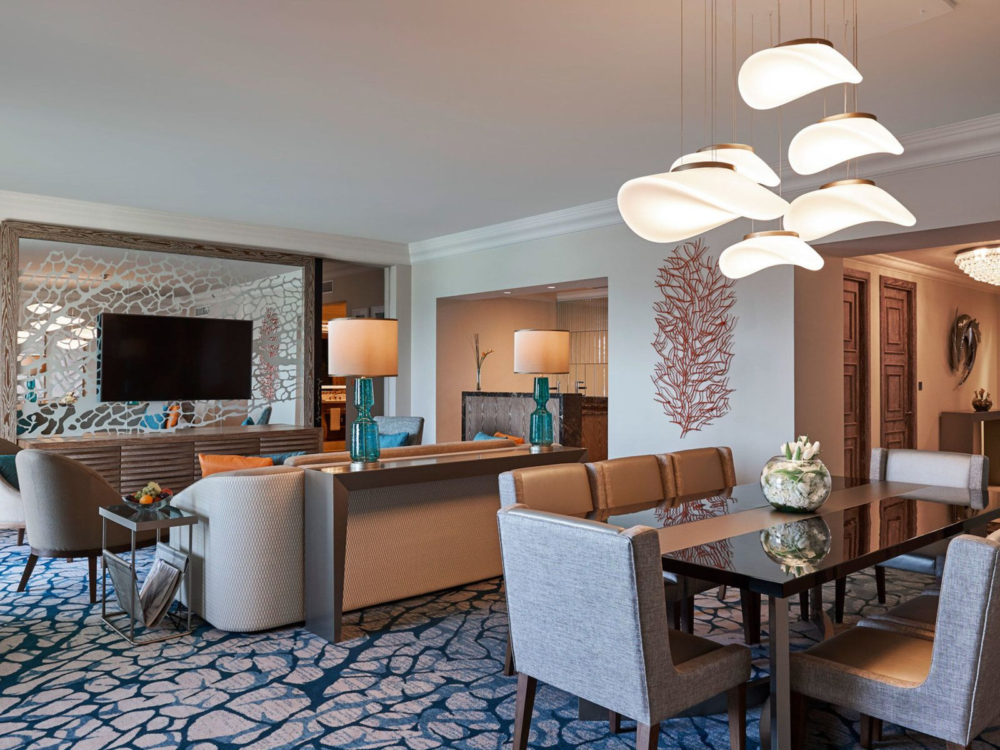
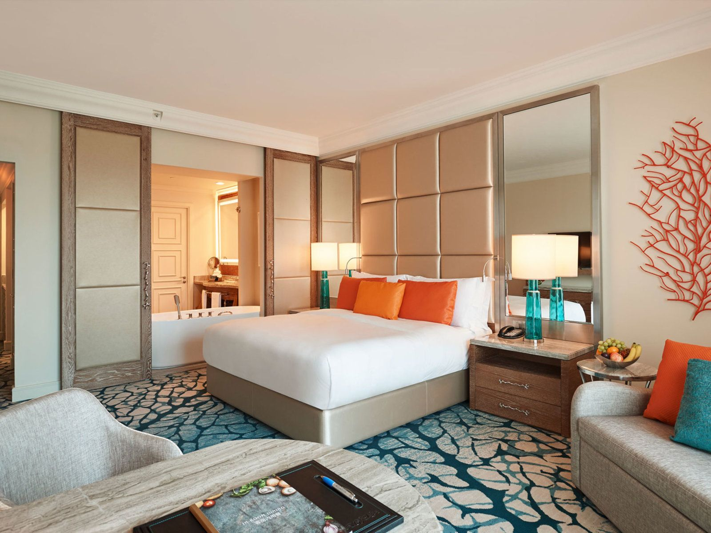
Die Arielle Suite ist ein wahrhaft königliches Zimmer.
Sobald Sie die prächtigen Türen öffnen, werden Sie von einem Hauch von Eleganz und Raffinesse begrüßt, der Sie in eine Welt des Luxus entführt.
Diese exklusive Hotelsuite strahlt eine zeitlose Eleganz aus, die von modernen Annehmlichkeiten perfekt ergänzt wird.
Der geräumige Wohnbereich ist mit feinsten Möbeln eingerichtet,die mit kunstvollen Details verziert sind,
und bietet den idealen Raum zum Entspannen oder für geschäftliche Besprechungen.
Das Schlafzimmer ist ein wahres Juwel der Entspannung. Das prächtige Kingsize-Bett ist mit luxuriöser Bettwäsche bezogen und verspricht eine erholsame Nachtruhe.
Willkommen in Ihrem persönlichen Palast fernab von Zuhause.
Preis pro Nacht: 890€
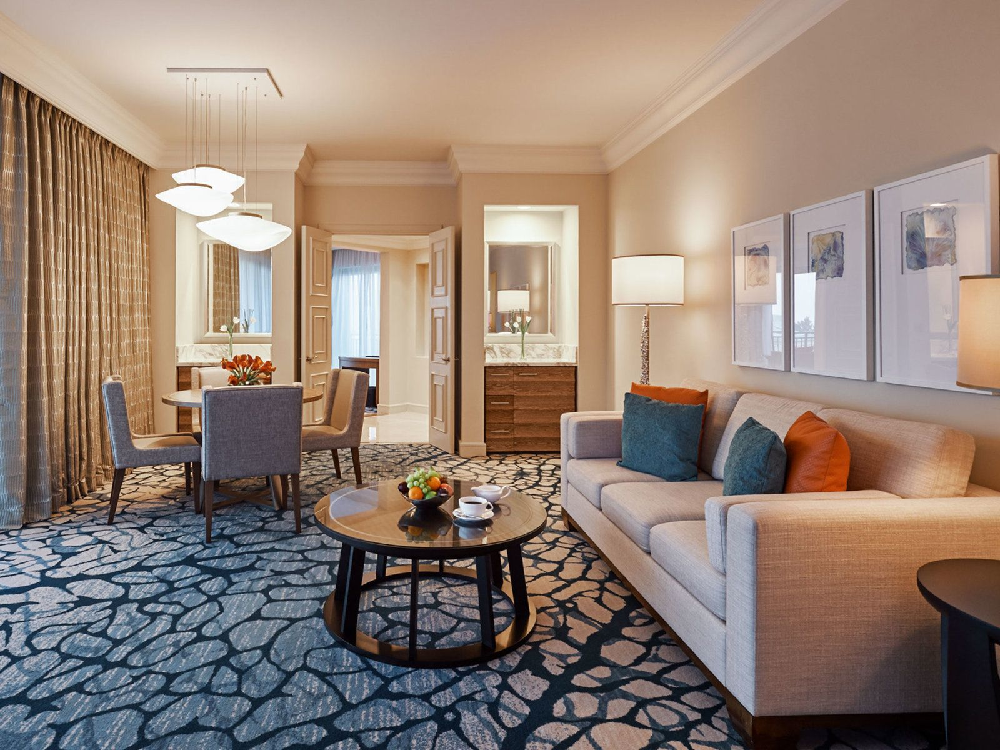
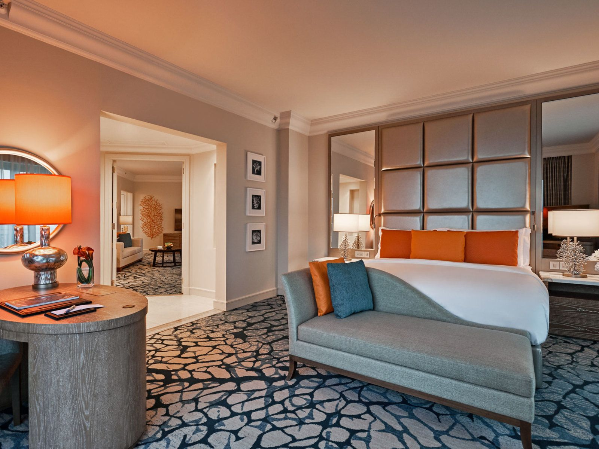
Willkommen in der Nemo Suite, einem einzigartigen Rückzugsort, der Sie in die faszinierende Welt der Ozeane entführt.
Sobald Sie die Tür zu diesem zauberhaften Zimmer öffnen,
werden Sie von einem Ambiente aus maritimer Eleganz und verspieltem Charme umgeben.Das Schlafzimmer ist ein gemütlicher Rückzugsort,
der von der Schönheit des Meeres inspiriert ist.
Ein komfortables Kingsize-Bett lädt zum Träumen ein,
während die geschmackvolle Dekoration und die subtilen Beleuchtungselemente eine ruhige und erholsame Atmosphäre schaffen.
Die Nemo Suite ist nicht nur ein Ort zum Verweilen, sondern auch ein Ort, an dem Fantasie und Realität auf wunderbare Weise miteinander verschmelzen.
Tauchen Sie ein in die Magie des Meeres und erleben Sie einen unvergesslichen Aufenthalt in diesem einzigartigen Hotelzimmer.
Preis pro Nacht: 790€
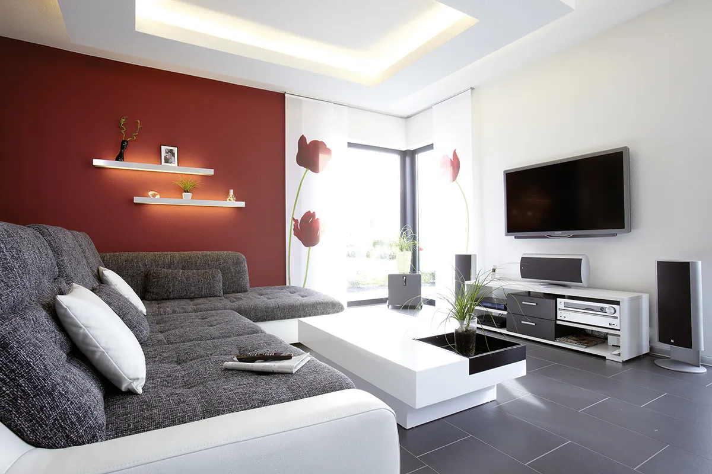

Die Titanic Suite erhebt sich majestätisch als Hommage an die Eleganz und das Erbe des legendären Schiffes.
Dieses prächtige Hotelzimmer lädt seine Gäste ein, in die faszinierende Ära der Belle Époque zurückzukehren und den Luxus der ersten Klasse zu erleben.
Beim Betreten der Titanic Suite werden Sie von einem opulenten Interieur umgeben, das die prunkvolle Atmosphäre der 1910er Jahre widerspiegelt.
Von handgearbeiteten Möbeln bis hin zu kunstvollen Details ist jedes Element sorgfältig ausgewählt, um ein Gefühl von Raffinesse und Nostalgie zu vermitteln.
Für diejenigen, die ein einzigartiges und unvergessliches Erlebnis suchen, ist die Titanic Suite eine Hommage an die Geschichte und den Luxus,
die den Gästen einen unvergleichlichen Aufenthalt bieten.
Willkommen an Bord dieses zeitlosen Meisterwerks der Gastfreundschaft.
Preis pro Nacht: 680€
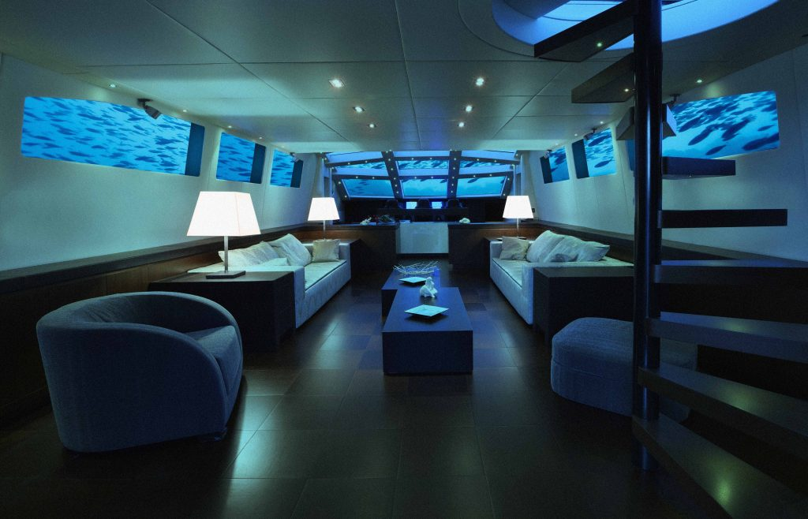

Die U-Boot Suite ist ein einzigartiges und faszinierendes Erlebnis, das Sie auf eine abenteuerliche Reise in die Tiefen der Ozeane entführt.
Sobald Sie die Tür zu dieser außergewöhnlichen Unterkunft öffnen, werden Sie von einem Ambiente aus maritimer Mystik und technologischer Innovation umgeben.
Das Innere der Suite ist ebenso beeindruckend gestaltet, wobei jedes Detail an das Design und die Atmosphäre eines echten U-Bootes erinnert.
Die geschwungenen Linien, die metallischen Akzente und die subtile Beleuchtung schaffen eine authentische und immersive Umgebung,
die Sie in eine andere Welt entführt. Das Schlafzimmer der U-Boot Suite bietet einen gemütlichen Rückzugsort, der von der Ruhe der Tiefsee inspiriert ist.
Ein komfortables Bett und nautische Details sorgen für eine erholsame Nachtruhe.
Ob Sie auf der Suche nach einem einzigartigen Abenteuer oder einfach nur nach einer unvergesslichen Unterkunft sind,
die U-Boot Suite bietet Ihnen eine unvergleichliche Erfahrung, die Sie für immer in Erinnerung behalten werden.
Tauchen Sie ein in die Wunder des Ozeans und lassen Sie sich von der Magie der U-Boot Suite verzaubern.
Preis pro Nacht: 1.190€

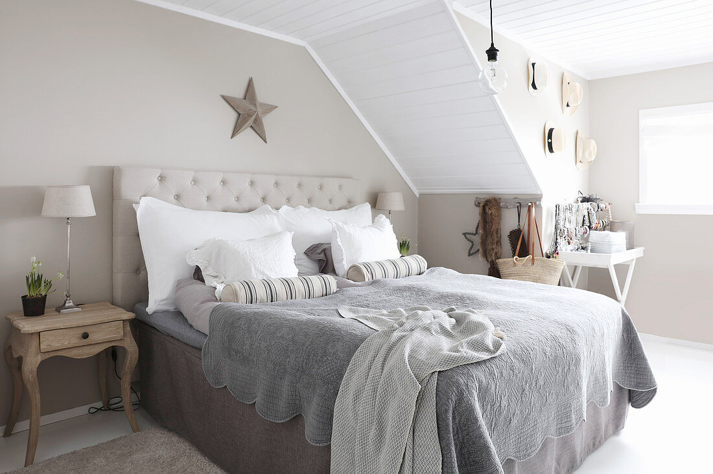
Die Kajüten Suite ist eine verlockende Oase der Entspannung und des Luxus inmitten eines geschäftigen Hotels.
Inspiriert von der Eleganz und dem Charme eines Seemannslebens bietet dieses besondere Zimmer eine einzigartige Atmosphäre,
die Gäste in eine Welt der maritimen Abenteuer entführt.
Beim Betreten der Kajüten Suite werden die Gäste von einer warmen und einladenden Einrichtung empfangen, die an die Gemütlichkeit einer Schiffskabine erinnert.
Die Möbel sind aus edlen Hölzern gefertigt und mit nautischen Details verziert, während eine sanfte Beleuchtung eine beruhigende Atmosphäre schafft.
Preis pro Nacht: 620€
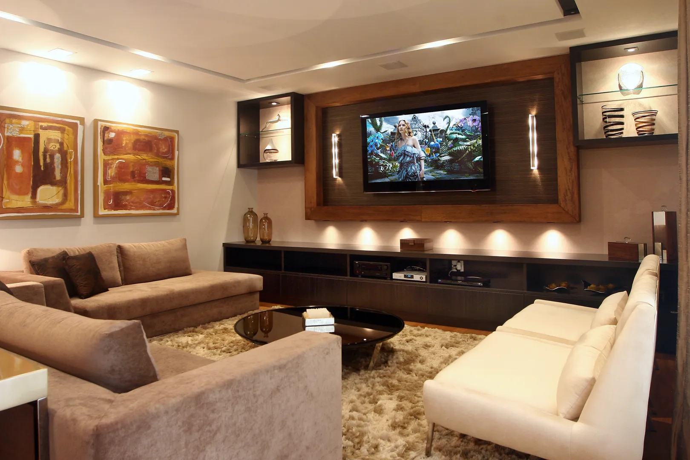
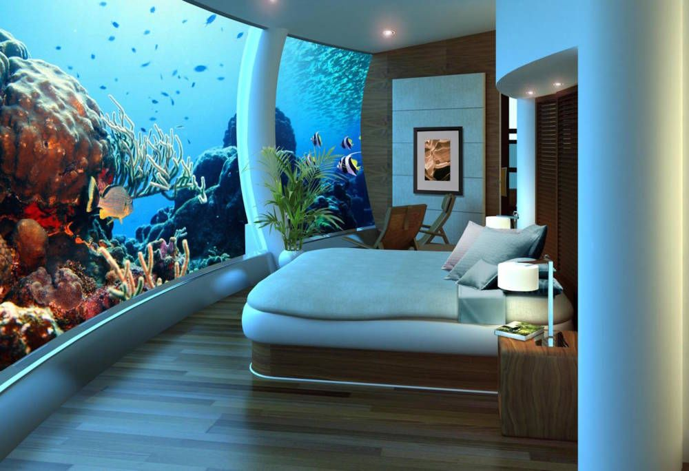
Die Vaina Suite ist ein wahrhaft luxuriöses Refugium, das seine Gäste in eine Welt der Eleganz und des Komforts entführt.
Inspiriert von zeitloser Schönheit und Raffinesse bietet dieses besondere Zimmer eine unvergleichliche Erfahrung für anspruchsvolle Reisende.
Beim Betreten der Vainas Suite werden Gäste von einer Atmosphäre der Opulenz und des Stils umgeben.
Die Einrichtung ist von modernem Design und klassischen Elementen geprägt,
wobei edle Stoffe, elegante Möbel und subtile Beleuchtung für ein Gefühl von Luxus sorgen.
Das Herzstück der Suite ist zweifellos das großzügige Kingsize-Bett, das mit hochwertiger Bettwäsche und komfortablen Kissen ausgestattet ist,
um einen erholsamen Schlaf zu garantieren. Ein geräumiges Wohnzimmer lädt zum Entspannen ein.
Es ist ein Rückzugsort, der dafür gemacht ist, unvergessliche Erinnerungen zu schaffen und den Gästen ein Gefühl von Exklusivität zu vermitteln,
das weit über ihre Erwartungen hinausgeht.
Preis pro Nacht: 1.280€
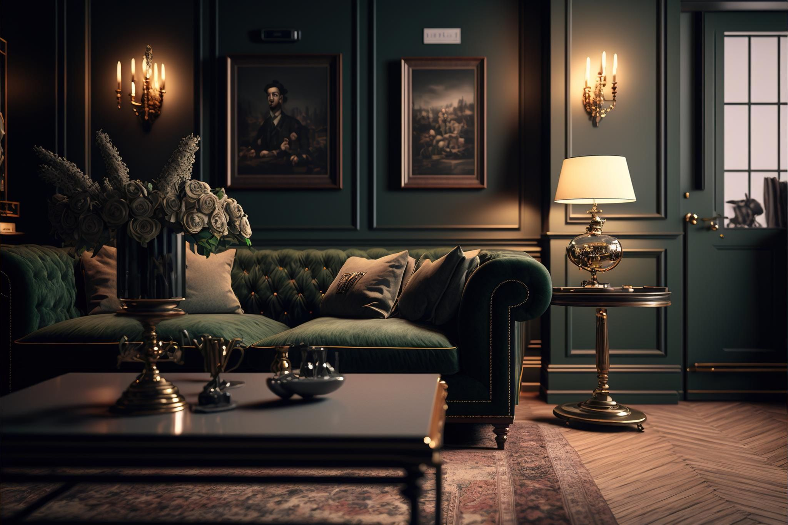

Beim Betreten der Captain Hook Suite werden die Gäste von einem Ambiente umgeben, das den Charme und die Geheimnisse der hohen See verkörpert.
Die Einrichtung ist von einem Hauch von Eleganz und Abenteuer geprägt, wobei dunkle Hölzer und goldene Akzente für eine authentische Atmosphäre sorgen.
Für diejenigen, die nach einem Aufenthalt voller Abenteuer und Stil suchen, bietet die Hook Suite einen einzigartigen Rückzugsort,
der die Sinne beflügelt und die Gäste in eine Welt voller Faszination und Nostalgie entführt.
Es ist ein Ort, der dazu bestimmt ist, unvergessliche Erinnerungen zu schaffen und die Fantasie zu entfachen.
Preis pro Nacht: 920€ (Nur auf Einladung des Kapitäns)
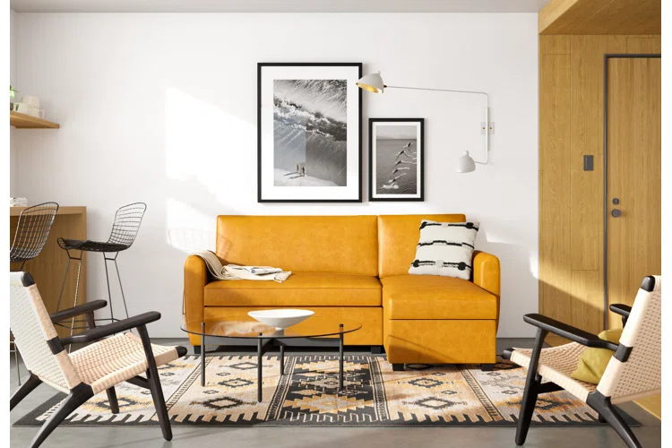

Die Klabautermann Suite ist ein zauberhaftes Hotelzimmer, das seine Gäste in die faszinierende Welt der maritimen Legenden entführt.
Inspiriert von den alten Seemannsgeschichten über den Klabautermann,
einen geheimnisvollen Schiffsgeist, bietet dieses besondere Zimmer eine einzigartige Mischung aus Abenteuer und Komfort.
Beim Betreten der Klabautermann Suite werden die Gäste von einem Ambiente der Seefahrerromantik umgeben. Für diejenigen,
die nach einem einzigartigen und abenteuerlichen Aufenthalt suchen, bietet die Klabautermann Suite einen Rückzugsort,
der die Sinne beflügelt und die Gäste in eine Welt der Seefahrerromantik entführt.
Es ist ein Ort, der dazu bestimmt ist, unvergessliche Erinnerungen zu schaffen und die Magie der alten Seemannsgeschichten wiederzubeleben.
Preis pro Nacht: 540€